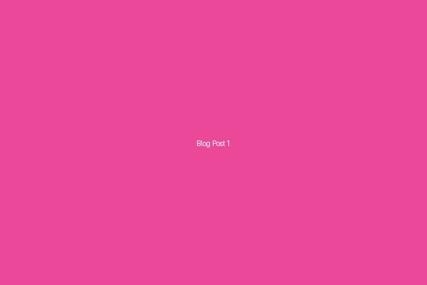
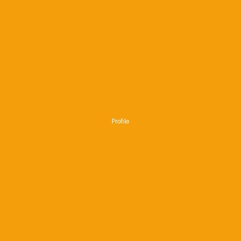
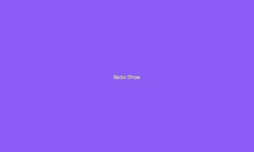
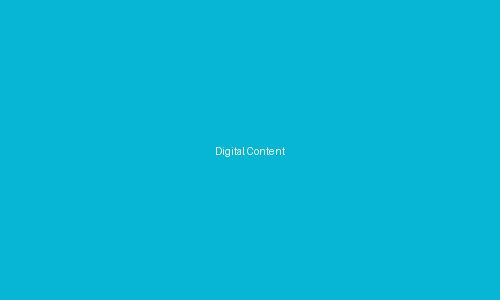
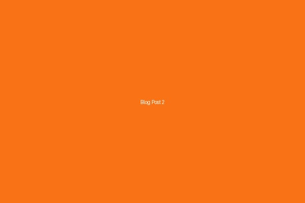
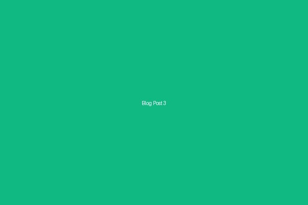

Multi-Talented Entertainer
RJ | Actor | Content Creator | Digital Media Pioneer
Bridging the worlds of radio, television, and digital media with storytelling that connects with millions across Bangladesh.
I am Musfiq R. Farhan, a versatile entertainer who has successfully carved a unique path across multiple media platforms. My journey began in radio, where I honed my voice and storytelling skills, connecting with audiences through the intimate medium of sound.
Transitioning to television and acting, I've expanded my creative expression, bringing characters to life and engaging viewers on screen. Today, as a content creator, I leverage digital platforms to reach a broader audience and share stories that resonate with the modern generation.
My work reflects a commitment to quality entertainment, authentic storytelling, and continuous innovation. I believe in the power of media to inspire, educate, and entertain, and I'm dedicated to creating content that makes a meaningful impact.

Years of experience connecting with listeners through engaging radio programming, interviews, and live shows.
Diverse roles in television dramas and productions, bringing depth and authenticity to every character.
Digital content creation across multiple platforms, building communities and engaging modern audiences.
Passionate about crafting narratives that entertain, inspire, and create meaningful connections with audiences.

Hosted a popular morning radio show that entertained and informed listeners across Bangladesh.
Featured in acclaimed television dramas, showcasing versatility in diverse character portrayals.

Creating engaging digital content that connects with millions of followers across social platforms.



Follow my journey across different media platforms and stay updated with my latest projects and insights.